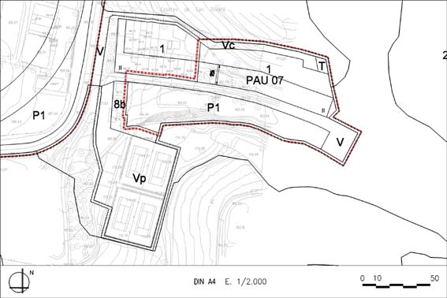

PAU 07 “Ca n’Oliveró” (Polígon d’actuació urbanística PAU – 07)

Objectiu: Ampliació i consolidació del nucli rural de les casetes de Ca n’Oliveró. Obtenció d’un espai lliure destinat a ser el punt de reunió del nucli.
Règim del sòl: Sòl Urbà No Consolidat
| Superfície del polígon: Ordenació(plànol vinculant) Sistemes urbanístics de cessió: Viari (V) Espais lliures (P1) Serveis tècnics (T) Viari cívic (Vc) Zones edificables: (Gàlibs indicatius) Residencial en filera unihabitatge (clau 1) |
8.324,97 m2s 1.546 m2s 3.190,7 m2s 78 m2s 471,27 m2s 3.039 m2s |
C.E.B.: (St) Sostre total (SH) Sostre per habitatges Nombre màxim d’habitatges: |
0,492 m2st/m2s 4.099 m2st 4.099 m2st 24 hab. |